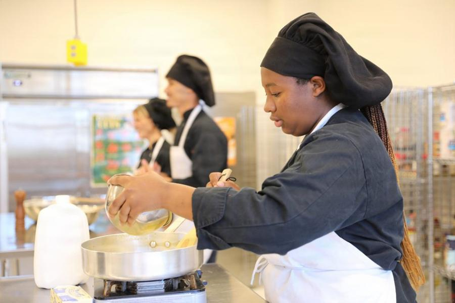
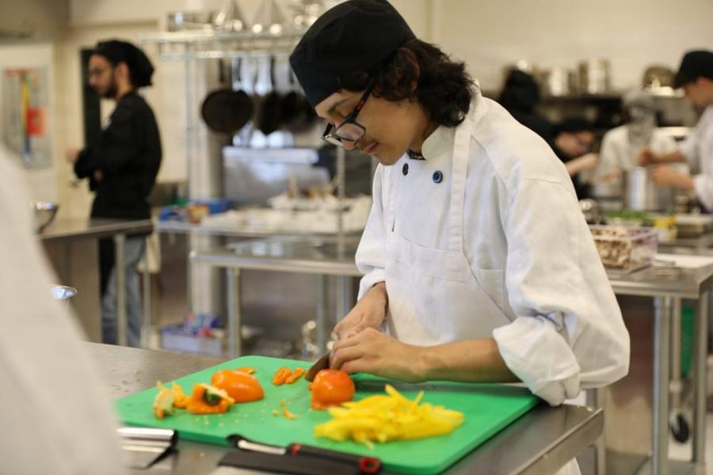
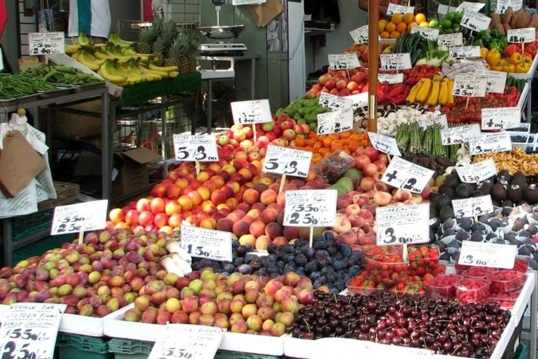
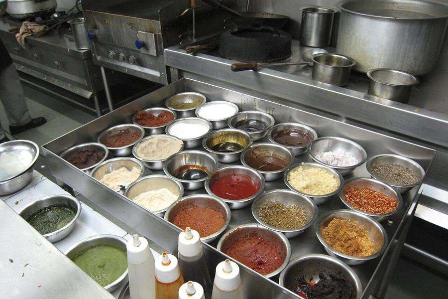

Behind the Pass: Working in a Restaurant Kitchen
Bac professionnel Cuisine, lycée hôtelier, anglais
The pass is the counter where the chef checks the plates before they go to the dining room.
Welcome to our hotel school
Welcome to our hotel school! Here you are learning to become a professional cook. English is part of the job: customers, suppliers and chefs come from all over the world.
The official programme sets the level for the bac pro: B1+ in language A and A2+ in language B. That means you can follow a conversation, describe a dish, explain a recipe and answer a customer.
Today you are in the training kitchen. You are the chef. Cook, explain and present your recipe to the guests. Ready? Let's start!
En français
Bienvenue au lycée hôtelier
Dans votre lycée hôtelier, vous apprenez un métier de la restauration. L'anglais en fait partie : clients, fournisseurs et chefs viennent du monde entier.
Le niveau attendu. Le programme de langues vivantes de la voie professionnelle (arrêté du 3 avril 2019, Bulletin officiel spécial n° 5) fixe pour le bac pro le niveau B1+ en langue vivante A (niveau visé B2) et A2+ en langue vivante B (niveau visé B1).
Au quotidien. Comprendre une conversation, présenter un plat, expliquer une recette, répondre à un client.
Aujourd'hui, vous êtes en cuisine pédagogique : vous cuisinez et présentez vos recettes aux clients du restaurant d'application. Cette séquence peut aussi nourrir votre réalisation d'un projet.
The kitchen
Spirale de Gorse
Méthode conçue par Madame Carole Paoli Pompougnac. Le nom rend hommage à sa grand-mère par alliance, Madame Armandine Gorse, avec un S. On gravit un texte, un audio ou une image comme une pente : chaque tour est une prise plus haute. On part de ce qui saute aux yeux, puis l'attention se resserre, jusqu'à la pointe, le sommet où l'essentiel se laisse voir. Quatre tours, puis la pointe. À appliquer, dans chaque lesson, au document principal (texte, image ou audio). Les réponses détaillées restent en Version prof.

Je remarque (I notice)
Ce qui saute aux yeux, la première impression.
I notice… / This is about…
Je repère (I spot)
Un détail, un passage, un élément plus net.
I spot… / The key word is…
Je comprends (I understand)
Ce que ces éléments permettent de comprendre.
This shows that… / They have in common…
J'anticipe (I anticipate)
La visée du texte, ce qu'il faut en faire.
The text wants me to… / I anticipate…
Je trouve le sens (I find the meaning)
La pointe : l'essentiel que l'on peut défendre, et sa limite.
The point is… / But I must not…
Lesson 1. The kitchen
Minutage, version prof
| Minutes | Étape | Ce que font les élèves | Activité |
|---|---|---|---|
| 0 à 4 | Accueil | Lecture du texte d'accueil et observation de la photo de la cuisine pédagogique. | CE |
| 4 à 14 | Spirale de Gorse | Quatre tours, puis la pointe, sur le texte The kitchen ou la photo. | CE, PO |
| 14 à 26 | Compréhension de l'écrit | Lecture de The kitchen. Amorces : In the photo, I can see… / They are…ing… | CE |
| 26 à 36 | Compréhension de l'oral | Vidéos existantes d'une cuisine professionnelle pendant le service. Noter trois actions, un bruit, un ordre. | CO |
| 36 à 48 | Production | Répondre oralement puis par écrit : What time does the service start? How many guests? What happens at the pass? | PO, PE |
| 48 à 52 | Trace écrite et homework | Recopiage, consigne. | PE |
| 52 à 55 | Marge | Rangement, sortie de la salle. La lesson dure 55 minutes, minutée sur 52. |
Exemple travaillé, version prof
Spirale de Gorse, document : le texte The kitchen. Je remarque : il est 10 heures, le service approche. Je repère : quarante-deux couverts, quatre parties de brigade, la mise en place. Je comprends : sans mise en place, le service serait un désastre ; un plat imparfait revient. J'anticipe : le texte prépare le moment où le cuisinier devra expliquer l'agneau en anglais. Je trouve le sens : le passe est le lieu du contrôle, et de la parole. On peut raconter le service ; on ne peut pas encore parler des allergènes.
Homework : Learn eight words (pass, brigade, mise en place, starter, pastry, supplier, guest, roast). Write five sentences about the morning in the training kitchen.
Trace écrite : « The pass is the counter where the chef checks the plates before they go to the dining room. If your mise en place is not ready, your service will be a disaster. »
Sortie de secours, version prof
Sortie de secours : les questions écrites se terminent au homework ; la spirale, une écoute et la trace restent en classe.
It is 10 a.m. in the training kitchen of the hotel school. Service starts at noon, and the restaurant is fully booked: forty-two guests, including a table of eight business people from Germany and a couple celebrating their anniversary. Chef Morgan has divided the brigade into sections: starters, fish, meat and pastry. Each cook knows exactly what to do.
Before cooking, everybody prepares the mise en place. Vegetables are peeled and chopped, sauces are reduced, and fresh fish is checked as soon as it arrives from the supplier. "If your mise en place is not ready, your service will be a disaster," the chef often says. The kitchen is noisy and hot, but nobody shouts: the cooks answer "Yes, Chef!" and work fast and cleanly.
At 12.15, the first orders arrive. One guest is allergic to nuts, another one is vegetarian, and a third wants to know where the lamb comes from. The chef checks every plate at the pass before it goes to the dining room. A plate that is not perfect goes back. Today you are on the meat section, and at the end of the service a guest has asked to meet the cook who prepared the roast lamb. You will have to explain the recipe in English.
Photo: Noriko Kudo, U.S. Army Garrison Japan, public domain, via Wikimedia Commons
Look at the photo. What can you see? Where are the people? What are they doing?
Sentence starters: In the photo, I can see… / The students are wearing… / They are in a… They are…ing… / I think they are preparing…
Videos:
Vocabulary
Spirale de Gorse
Méthode conçue par Madame Carole Paoli Pompougnac. Le nom rend hommage à sa grand-mère par alliance, Madame Armandine Gorse, avec un S. On gravit un texte, un audio ou une image comme une pente : chaque tour est une prise plus haute. On part de ce qui saute aux yeux, puis l'attention se resserre, jusqu'à la pointe, le sommet où l'essentiel se laisse voir. Quatre tours, puis la pointe. À appliquer, dans chaque lesson, au document principal (texte, image ou audio). Les réponses détaillées restent en Version prof.
Je remarque (I notice)
Ce qui saute aux yeux, la première impression.
I notice… / This is about…
Je repère (I spot)
Un détail, un passage, un élément plus net.
I spot… / The key word is…
Je comprends (I understand)
Ce que ces éléments permettent de comprendre.
This shows that… / They have in common…
J'anticipe (I anticipate)
La visée du texte, ce qu'il faut en faire.
The text wants me to… / I anticipate…
Je trouve le sens (I find the meaning)
La pointe : l'essentiel que l'on peut défendre, et sa limite.
The point is… / But I must not…
Lesson 2. Expanding your vocabulary
Minutage, version prof
| Minutes | Étape | Ce que font les élèves | Activité |
|---|---|---|---|
| 0 à 4 | Photo | Observer l'élève qui taille des légumes, nommer ce que l'on voit. | PO |
| 4 à 14 | Spirale de Gorse | Quatre tours, puis la pointe, sur une liste (ustensiles ou produits). | CE, PO |
| 14 à 26 | Expanding your vocabulary | Dire, répéter, classer : utensils, vegetables, meat, herbs, fish, shellfish, verbs (chop, peel, boil, fry, roast, bake). | CO, PO |
| 26 à 36 | Compréhension de l'oral | L'enseignante (ou un enregistrement) énonce six mots ; les élèves écrivent le mot et la catégorie. | CO |
| 36 à 48 | Production | Décrire en 60 mots la photo ou une mise en place, avec huit mots de la liste. | PE, PO |
| 48 à 52 | Trace écrite et homework | Recopiage, consigne. | PE |
| 52 à 55 | Marge | Rangement, sortie de la salle. La lesson dure 55 minutes, minutée sur 52. |
Exemple travaillé, version prof
Listes existantes à conserver en entier.
Spirale de Gorse, document : une liste (par exemple kitchen utensils ou fish and shellfish). Je remarque : beaucoup de mots du poste. Je repère : trois ustensiles, trois produits, deux verbes. Je comprends : chaque mot sert à donner un ordre ou à répondre à un client. J'anticipe : la liste prépare la parole en cuisine, pas un examen de traduction isolée. Je trouve le sens : le bon mot protège le service. On peut nommer ; on ne peut pas encore expliquer une allergie.
Homework : Learn twelve words (four utensils, four foods, four verbs). Write six sentences: First I peel… Then I chop…
Trace écrite : « a knife, a chopping board, a saucepan, a frying pan, a whisk, a ladle. to chop, to peel, to roast, to bake. »
Sortie de secours, version prof
Sortie de secours : la production de 60 mots passe au homework ; six mots oraux et la trace restent en classe.

Photo: Noriko Kudo, U.S. Army Garrison Japan, public domain, via Wikimedia Commons
Kitchen utensils
| a knife | un couteau |
| a chopping board | une planche à découper |
| a saucepan | une casserole |
| a frying pan | une poêle |
| a whisk | un fouet |
| a ladle | une louche |
| a peeler | un économe |
| a colander | une passoire |
| a grater | une râpe |
| a spatula | une spatule |
| tongs | des pinces |
| a mixing bowl | un saladier |
| scales | une balance |

Photo: Evelyn Simak, CC BY-SA 2.0, via Wikimedia Commons
Fresh vegetables
| a carrot | une carotte |
| a leek | un poireau |
| an onion | un oignon |
| garlic | l'ail |
| a courgette | une courgette |
| an aubergine | une aubergine |
| a mushroom | un champignon |
| a pepper | un poivron |
| a cabbage | un chou |
| a potato | une pomme de terre |
Meat
| beef | le bœuf |
| lamb | l'agneau |
| pork | le porc |
| veal | le veau |
| chicken | le poulet |
| duck | le canard |
| a steak | un steak |
| a sausage | une saucisse |
Condiments and herbs
| salt | le sel |
| black pepper | le poivre noir |
| mustard | la moutarde |
| vinegar | le vinaigre |
| olive oil | l'huile d'olive |
| mint sauce | la sauce à la menthe |
| horseradish | le raifort |
| gravy | le jus de viande |
| parsley | le persil |
| thyme | le thym |
Fish
| salmon | le saumon |
| cod | le cabillaud |
| haddock | l'églefin |
| sea bass | le bar |
| trout | la truite |
| mackerel | le maquereau |
| tuna | le thon |
Shellfish
| prawns | les crevettes |
| a crab | un crabe |
| a lobster | un homard |
| mussels | les moules |
| oysters | les huîtres |
| scallops | les coquilles Saint-Jacques |
| langoustines | les langoustines |
Useful verbs
| to chop | hacher |
| to peel | éplucher |
| to boil | faire bouillir |
| to fry | faire frire |
| to roast | rôtir |
| to bake | cuire au four |
Comprehension
Spirale de Gorse
Méthode conçue par Madame Carole Paoli Pompougnac. Le nom rend hommage à sa grand-mère par alliance, Madame Armandine Gorse, avec un S. On gravit un texte, un audio ou une image comme une pente : chaque tour est une prise plus haute. On part de ce qui saute aux yeux, puis l'attention se resserre, jusqu'à la pointe, le sommet où l'essentiel se laisse voir. Quatre tours, puis la pointe. À appliquer, dans chaque lesson, au document principal (texte, image ou audio). Les réponses détaillées restent en Version prof.
Je remarque (I notice)
Ce qui saute aux yeux, la première impression.
I notice… / This is about…
Je repère (I spot)
Un détail, un passage, un élément plus net.
I spot… / The key word is…
Je comprends (I understand)
Ce que ces éléments permettent de comprendre.
This shows that… / They have in common…
J'anticipe (I anticipate)
La visée du texte, ce qu'il faut en faire.
The text wants me to… / I anticipate…
Je trouve le sens (I find the meaning)
La pointe : l'essentiel que l'on peut défendre, et sa limite.
The point is… / But I must not…
Lesson 3. The 14 allergens and Natasha's Law
Minutage, version prof
| Minutes | Étape | Ce que font les élèves | Activité |
|---|---|---|---|
| 0 à 4 | Mise en route | Rappeler la demande du client allergique aux fruits à coque, dans The kitchen. | PO |
| 4 à 14 | Spirale de Gorse | Quatre tours, puis la pointe, sur l'encadré Natasha's Law. | CE, PO |
| 14 à 28 | Compréhension de l'écrit | Lecture de l'encadré existant (What, Who, When, Why it matters). | CE |
| 28 à 38 | Compréhension de l'oral | Court dialogue lu deux fois : un client demande si le dessert contient des fruits à coque. | CO |
| 38 à 48 | Production | Écrire et dire la réponse honnête du cuisinier, puis une alternative. | PE, PO |
| 48 à 52 | Trace écrite et homework | Recopiage, consigne. | PE |
| 52 à 55 | Marge | Rangement, sortie de la salle. La lesson dure 55 minutes, minutée sur 52. |
Exemple travaillé, version prof
Encadré existant à conserver, avec les sources GOV.UK.
Transcript d'entraînement (Version prof), pour la CO de la lesson :
> Excuse me, does this dessert contain nuts? Let me check. The cake has almonds, so I cannot recommend it. I can offer the fruit salad instead. It has no nuts, no milk and no gluten. Thank you for telling me.
Spirale de Gorse, document : l'encadré Natasha's Law. Je remarque : une loi britannique sur les allergènes. Je repère : quatorze allergènes, une adolescente, 2016, l'obligation d'étiquetage depuis 2021. Je comprends : un cuisinier doit connaître chaque ingrédient et répondre clairement. J'anticipe : le texte prépare une réponse honnête au client, pas un exposé juridique. Je trouve le sens : la parole juste protège le client. On peut citer la règle ; on ne peut pas inventer une composition.
Homework : Learn the 14 allergens in English. Write a six-line dialogue: a guest asks about nuts, the cook checks and suggests another dish.
Trace écrite : « Restaurants must be able to tell customers if a dish contains any of the 14 main allergens. When a guest is allergic to nuts, the cook must know every ingredient and answer clearly and honestly. »
Sortie de secours, version prof
Sortie de secours : le dialogue écrit se termine au homework ; la lecture, la spirale et la trace restent en classe.
Read the text in “Reading”. Answer in full sentences, then tap a question to check your answer.
A. Find the information
What time does the service start?
It starts at noon.
How many guests are expected?
Forty-two guests: the restaurant is fully booked.
Name the four sections of the brigade.
Starters, fish, meat and pastry.
What happens at the pass?
The chef checks every plate before it goes to the dining room.
Which three special requests do the guests make?
One guest is allergic to nuts, one is vegetarian, and one wants to know where the lamb comes from.
B. True or false? Justify with a quotation.
The cooks shout a lot during service.
False: “nobody shouts: the cooks answer ‘Yes, Chef!’”
The fish is checked when it is delivered.
True: “fresh fish is checked as soon as it arrives from the supplier.”
All the plates go to the dining room.
False: “A plate that is not perfect goes back.”
C. Read between the lines
Why does the chef say the mise en place is so important?
Because without it the cooks cannot work fast during service; the service would be a disaster.
What does “Yes, Chef!” show about the kitchen?
It shows respect, discipline and clear communication in the brigade.
Why is it important to know that a guest is allergic to nuts?
Because an allergy can be dangerous: the cooks must avoid nuts and any contact with them.
How do you think the cook feels when a guest asks to meet them? Why?
Proud but a little nervous, because the guest liked the dish and the cook must speak English.
Grammar: asking questions
Spirale de Gorse
Méthode conçue par Madame Carole Paoli Pompougnac. Le nom rend hommage à sa grand-mère par alliance, Madame Armandine Gorse, avec un S. On gravit un texte, un audio ou une image comme une pente : chaque tour est une prise plus haute. On part de ce qui saute aux yeux, puis l'attention se resserre, jusqu'à la pointe, le sommet où l'essentiel se laisse voir. Quatre tours, puis la pointe. À appliquer, dans chaque lesson, au document principal (texte, image ou audio). Les réponses détaillées restent en Version prof.
Je remarque (I notice)
Ce qui saute aux yeux, la première impression.
I notice… / This is about…
Je repère (I spot)
Un détail, un passage, un élément plus net.
I spot… / The key word is…
Je comprends (I understand)
Ce que ces éléments permettent de comprendre.
This shows that… / They have in common…
J'anticipe (I anticipate)
La visée du texte, ce qu'il faut en faire.
The text wants me to… / I anticipate…
Je trouve le sens (I find the meaning)
La pointe : l'essentiel que l'on peut défendre, et sa limite.
The point is… / But I must not…
Lesson 4. Asking questions and measurements
Minutage, version prof
| Minutes | Étape | Ce que font les élèves | Activité |
|---|---|---|---|
| 0 à 4 | Rappel | Relire les formes : Is it spicy? What is in the sauce? Could you tell me…? | CE |
| 4 à 14 | Spirale de Gorse | Quatre tours, puis la pointe, sur une question indirecte ou l'encadré des unités. | CE, PO |
| 14 à 24 | Compréhension de l'oral | Trois questions de clients lues ou enregistrées ; les élèves notent la question et y répondent. | CO |
| 24 à 38 | Grammaire et mesures | Exercices existants (find the question, make it polite, correct the mistake) puis conversions (1 lb, 8 oz, 1 pint, 350 °F, 2 tablespoons). | PE |
| 38 à 48 | Production orale | En binômes : cinq questions, dont une indirecte, une sur les allergènes, une sur une mesure. | PO |
| 48 à 52 | Trace écrite et homework | Recopiage, consigne. | PE |
| 52 à 55 | Marge | Rangement, sortie de la salle. La lesson dure 55 minutes, minutée sur 52. |
Exemple travaillé, version prof
Exercices et corrigés existants à conserver. Encadré Why pounds, ounces and pints? à conserver (Weights and Measures Act 1985 ; pinte britannique et pinte américaine).
Spirale de Gorse, document : « Could you tell me where the lamb comes from? » ou l'encadré des unités. Je remarque : une question polie, ou un chiffre. Je repère : l'ordre des mots sans does, ou 1 lb = 454 g. Je comprends : la politesse et l'exactitude font partie du service. J'anticipe : ces formes préparent l'échange avec le client, pas un exercice isolé. Je trouve le sens : bien demander, et bien mesurer, protège le plat et le client. On peut former la phrase ; on ne peut pas encore comparer deux plats.
Homework : Finish the indirect questions and two conversions. Write four polite questions a guest might ask.
Trace écrite : « Could you tell me where the lamb comes from? 1 lb ≈ 454 g. 1 pint ≈ 0,57 l. 350 °F ≈ 180 °C. »
Sortie de secours, version prof
Sortie de secours : les conversions se terminent au homework ; une série de questions et la trace restent en classe.
In a restaurant, guests ask questions and staff must ask questions politely too. Study the rules, then do the tasks.
1. Question forms
| Yes/No | Is it spicy? / Does it contain nuts? / Can I have the recipe? |
| Wh- questions | What is in the sauce? / Where does the lamb come from? / How long does it take? |
| Polite requests | Could you tell me…? / Would you like…? / May I take your order? |
| Indirect questions | Could you tell me where the lamb comes from? (no “does”, normal word order) |
2. Find the question. Tap to check.
Answer: “The sauce is made with red wine and thyme.”
What is the sauce made with?
Answer: “It takes about two hours to cook.”
How long does it take to cook?
Answer: “The lamb comes from a farm in Wales.”
Where does the lamb come from?
Answer: “No, there are no nuts in this dessert.”
Are there any nuts in this dessert? / Does this dessert contain nuts?
3. Make it polite: write an indirect question.
Where does the fish come from? → Could you tell me…
Could you tell me where the fish comes from?
What is in the dressing? → Do you know…
Do you know what is in the dressing?
Is the soup vegetarian? → Could you tell me…
Could you tell me if the soup is vegetarian?
How did you cook the lamb? → I would like to know…
I would like to know how you cooked the lamb.
4. Correct the mistake.
Where comes the lamb from?
Where does the lamb come from?
Could you tell me where is the kitchen?
Could you tell me where the kitchen is?
Measurements
Useful conversions: 1 oz = 28 g | 1 lb = 454 g | 1 pint = 0.57 l | 1 tablespoon = 15 ml | 350 °F = 180 °C
The recipe needs 1 lb of potatoes. How many grams?
About 454 g.
You need 8 oz of flour. How many grams?
About 227 g.
A recipe uses 1 pint of milk. How many litres?
About 0.57 litres.
Bake at 350 degrees Fahrenheit. How many degrees Celsius?
About 180 degrees Celsius.
You add 2 tablespoons of oil. How many millilitres?
30 ml.
Comparing dishes
Comparatives: cheaper than, spicier than, more expensive than, better than. Superlatives: the cheapest, the spiciest, the most popular, the best. Complete, then tap to check.
Beef is ___ (expensive) than chicken.
more expensive
The curry is ___ (spicy) than the soup.
spicier
Fish and chips is ___ (popular) dish on the menu.
the most popular
Fresh herbs are ___ (good) than dried herbs.
better
This is ___ (hot) station in the kitchen.
the hottest
Roasting takes ___ (long) than frying.
longer
Your opinion
Compare two dishes from the menu: price, cooking time, taste.
Sentence starters: The… is cheaper than… / It takes longer to cook because… / In my opinion, the best dish is… because…
Your turn
Spirale de Gorse
Méthode conçue par Madame Carole Paoli Pompougnac. Le nom rend hommage à sa grand-mère par alliance, Madame Armandine Gorse, avec un S. On gravit un texte, un audio ou une image comme une pente : chaque tour est une prise plus haute. On part de ce qui saute aux yeux, puis l'attention se resserre, jusqu'à la pointe, le sommet où l'essentiel se laisse voir. Quatre tours, puis la pointe. À appliquer, dans chaque lesson, au document principal (texte, image ou audio). Les réponses détaillées restent en Version prof.
Je remarque (I notice)
Ce qui saute aux yeux, la première impression.
I notice… / This is about…
Je repère (I spot)
Un détail, un passage, un élément plus net.
I spot… / The key word is…
Je comprends (I understand)
Ce que ces éléments permettent de comprendre.
This shows that… / They have in common…
J'anticipe (I anticipate)
La visée du texte, ce qu'il faut en faire.
The text wants me to… / I anticipate…
Je trouve le sens (I find the meaning)
La pointe : l'essentiel que l'on peut défendre, et sa limite.
The point is… / But I must not…
Lesson 5. Comparing dishes and your turn
Minutage, version prof
| Minutes | Étape | Ce que font les élèves | Activité |
|---|---|---|---|
| 0 à 4 | Comparatifs | cheaper, spicier, more expensive, better ; the most popular, the best. | CE |
| 4 à 12 | Spirale de Gorse | Quatre tours, puis la pointe, sur la consigne du mail ou une comparaison de plats. | CE, PO |
| 12 à 20 | Oral de comparaison | Comparer deux plats (prix, cuisson, goût) avec les amorces existantes. | PO |
| 20 à 40 | Production écrite | Email existant, 80 à 120 mots : présenter le plat, les ingrédients, cinq étapes, un conseil. | PE |
| 40 à 50 | Jeu de rôle ou menu | Jeu de rôle existant, ou menu du restaurant d'application (entrée, plat, dessert, prix en livres). | PO, PE |
| 50 à 52 | Trace écrite et homework | Recopiage, consigne. | PE |
| 52 à 55 | Marge | Rangement, sortie de la salle. La lesson dure 55 minutes, minutée sur 52. |
Exemple travaillé, version prof
Exercices de comparatifs et corrigés existants à conserver. Amorces du mail et du jeu de rôle à conserver.
Spirale de Gorse, document : la consigne du mail au client. Je remarque : un client a aimé le plat et demande la recette. Je repère : ingrédients, cinq étapes, un conseil. Je comprends : il faut être clair et poli, sans tout révéler d'un secret de brigade si l'on choisit de rester prudent. J'anticipe : le mail prépare une parole professionnelle, pas une liste d'ingrédients sans phrase. Je trouve le sens : expliquer un plat, c'est prolonger le service derrière le passe. On peut écrire la recette ; on ne doit pas oublier l'allergie éventuelle.
Homework : Finish the email if needed. Complete the school restaurant menu. Learn the sentence starters of the role-play.
Trace écrite : « First,… Then,… Next,… After that,… Finally,… I am afraid it contains…, but I can suggest… In my opinion, the best dish is… because… »
Sortie de secours, version prof
Sortie de secours : le menu se termine au homework ; le mail (même inachevé) et la trace restent en classe. Le jeu de rôle peut passer au début de la lesson suivante.

Photo: Charles Haynes, CC BY-SA 2.0, via Wikimedia Commons
1. Write (80–120 words)
A guest has asked for your recipe of the day. Write an email to the guest: present the dish, list the main ingredients, explain the recipe in at least five steps and give one piece of advice.
Sentence starters: Dear…, thank you for your kind words about… / The main ingredients are… / First,… Then,… Next,… After that,… Finally,… / My advice: do not forget to… / Best wishes,…
2. Role-play in pairs
Student A is the guest, Student B is the cook. The guest asks at least five questions (one indirect question, one about allergies, one comparing two dishes). The cook answers politely and explains the recipe.
Sentence starters: Could you tell me what is in…? / Is it spicier than…? / Of course. It is made with… / I am afraid it contains…, but I can suggest… / I'm glad you enjoyed it!
3. Create a menu
Write a menu for the school restaurant: one starter, one main course, one dessert, with prices in pounds and one sentence to describe each dish.
Sentence starters: To start, we suggest… / For the main course, we serve… with… / For dessert, try our…, the most popular… / It costs… pounds.